I'm Jinkyeong!
I’ve worked on diverse projects spanning social media, marketing, posters, editorials, UX/UI, exhibitions, and installations. I’m passionate about using design to solve problems and create a positive impact on society.
Throughout my career, I’ve had the opportunity to oversee projects from start to finish — first at a design and marketing agency, and later by running my own studio. I’ve handled every stage of the process, from budgeting and client communication to market research, on-site inspections, planning and strategy, design, development, and QA.
소셜 미디어, 마케팅, 포스터, 에디토리얼, UX/UI, 전시, 설치물 등 다양한 분야의 프로젝트를 경험했습니다. 디자인으로 문제를 해결하고 사회에 긍정적인 영향을 만드는 데 열정을 가지고 있습니다.
에이전시를 다니고, 스튜디오를 운영하며, 예산 수립부터 클라이언트 커뮤니케이션, 시장 조사, 현장 점검, 기획, 디자인, 개발, QA까지 프로젝트의 처음부터 끝까지 전 과정을 직접 이끌어왔습니다.
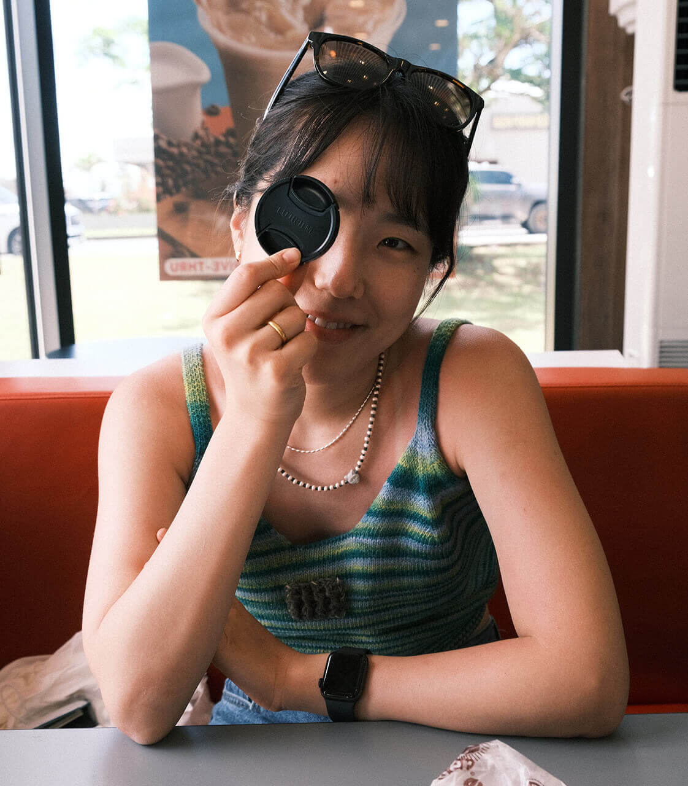
Work Experience
- Developed brand guidelines, typography, and color systems for 20+ clients including PhoneBox Canadian telecom, Rementary fashion, and Floyd luggage, covering end-to-end visual design
- Planned and produced multi-channel digital assets including campaign visuals, social media content, and responsive layouts
- Built and developed e-commerce and campaign websites using HTML/CSS/JS, including custom component libraries
- Independently managed full project lifecycle — client communication, scheduling, and feedback integration
- PhoneBox캐나다 통신사, Rementary패션, Floyd캐리어 등 20여 개 클라이언트의 브랜드 가이드라인, 타이포그래피, 컬러 시스템 구축 및 전방위 시각 디자인
- 캠페인 비주얼, 소셜 콘텐츠, 반응형 레이아웃 등 다채널 디지털 에셋 기획 및 제작
- HTML/CSS/JS 기반 커머스·캠페인 웹사이트 직접 개발 및 컴포넌트 라이브러리 구축
- 기획·납품 전 과정 독립 관리 — 클라이언트 커뮤니케이션, 일정 조율, 피드백 반영
Key Project
- PhoneBox — Visual identity system for a Canadian telecom brand PhoneBox — 캐나다 통신 브랜드 비주얼 시스템 구축 Link
- Rementary — Website design and digital brand experience for a fashion brand Rementary — 패션 브랜드 웹사이트 구축 및 디지털 브랜드 경험 디자인 Link
- Floyd — Website design for a global luggage brand Floyd — 글로벌 캐리어 브랜드 웹사이트 디자인 Link
- Seoul KFEM — Brand identity renewal 서울환경연합 — 브랜드 아이덴티티 리뉴얼
- Led visual strategy and identity system development for NGO campaigns including UNICEF, Amnesty International, and Oxfam
- Planned and produced multi-channel content for brands including Desker and Queicker across Instagram, YouTube, and Naver Blog
- Designed and developed campaign websites and landing pages with HTML/CSS implementation (collaborated with planners and developers)
- Managed 2 interns and 1 junior designer, and oversaw full project operations including vendor communication and external partnerships
- 유니세프·앰네스티·옥스팜 등 비영리단체 캠페인 비주얼 전략 수립 및 아이덴티티 시스템 제작
- 데스커·퀘이커 등 브랜드의 인스타그램·유튜브·네이버 블로그 멀티채널 콘텐츠 기획 및 제작
- 캠페인 웹사이트·랜딩 페이지 디자인 및 아임웹·HTML/CSS 기반 구현 (기획자·개발자 협업)
- 인턴 2명·주니어 디자이너 1명 매니징, 견적·외부 업체 소통 등 프로젝트 운영 전반
Key Project
- Happy Birthday, Rans — Amnesty International outdoor campaign & multi-channel design 랜스야, 생일 축하해 — 국제앰네스티 옥외 캠페인 & 멀티채널 디자인 Link
- Amnesty International — Digital brand experience design 국제앰네스티 — 디지털 브랜드 경험 디자인 Link
- DESKER — Digital brand experience design & content management DESKER — 디지털 브랜드 경험 디자인 & 콘텐츠 운영 Link
- Double A Note — Brand product & character design Double A 노트 — 브랜드 제품 디자인 & 캐릭터 개발 Link
- Designed exhibition posters and a 50-page catalogue for Kansong Cultural Foundation (50,000+ visitors)
- Assisted in brand identity and guideline development for cosmetics and sound platform brands
- 간송문화재단 전시 포스터 및 50페이지 도록 디자인 담당 (관람객 50,000명+)
- 화장품·사운드 플랫폼 등 브랜드 아이덴티티 및 가이드라인 제작 보조
Key Project
- Drawn by the Wind — Exhibition poster design 〈바람을 그리다〉 전시 포스터 디자인 Link
Speaking & Community
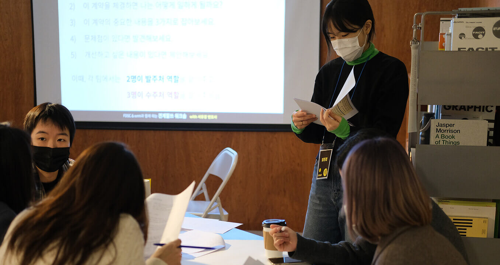
Improving Designer Work Culture
디자이너 업무 문화 개선
Organized and led workshops on legal knowledge for designers, focusing on contract and proposal writing. Also facilitated design theory and history study groups to help designers build stronger professional foundations and expand their theoretical understanding.
디자이너를 위한 법률 지식 워크숍을 기획하고 진행했습니다. 계약서·제안서 작성을 중심으로 실무에 필요한 법적 지식을 다뤘으며, 디자인 이론 및 역사 스터디 그룹을 운영하여 디자이너들이 전문적 기반을 탄탄히 쌓을 수 있도록 지원했습니다.
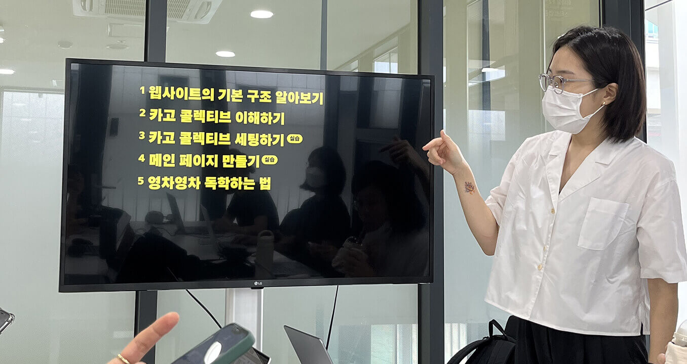
Teaching Web Design & Development
웹 디자인 & 개발 강의
Taught foundational web design and development skills to designers, helping early-career professionals build their portfolios and providing ongoing mentorship as they developed their online presence.
디자이너들에게 웹 디자인과 개발의 기초를 가르치며 초기 경력자들의 포트폴리오 구축을 도왔습니다. 온라인 활동 전반에 걸쳐 지속적인 멘토링을 제공했습니다.
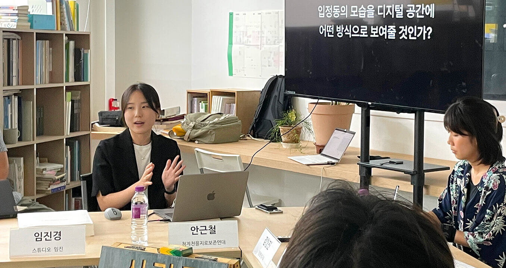
Talk: Designing for Urban Heritage Preservation
토론회: 온라인에 도시를 기록한다는 것
Collaborated with Cheongyecheon Anti-Gentrification Alliance, an advocacy group opposing unplanned redevelopment in Seoul, and presented on the design process behind the project, exploring how design can support community-led urban preservation efforts.
서울의 무분별한 재개발에 반대하는 청계천을지로보존연대와 협업하여 프로젝트의 디자인 과정을 발표했습니다. 디자인이 지역사회 주도의 도시 보전 활동을 어떻게 뒷받침할 수 있는지를 함께 탐구했습니다.
In My Free Time
-
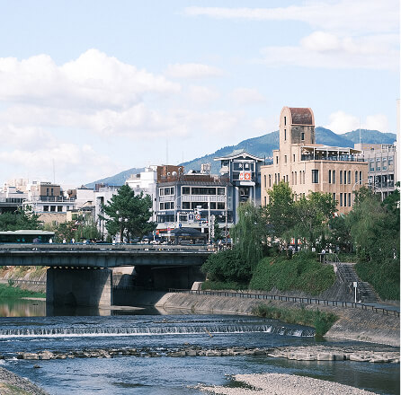
-
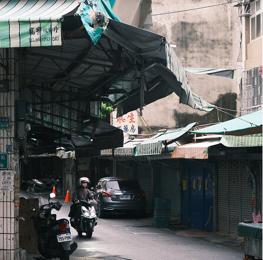
-
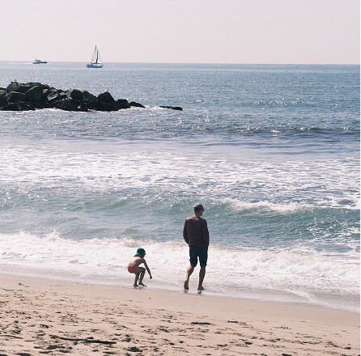
-
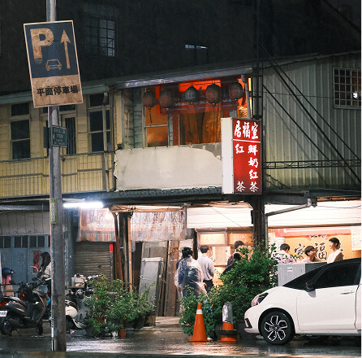
-
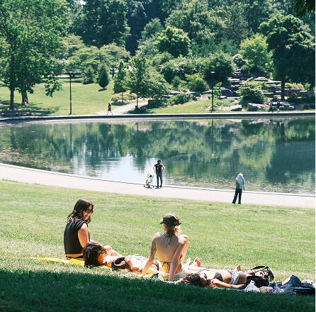
-
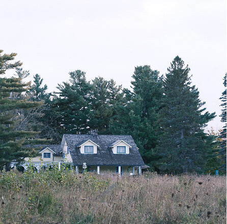
Photography
I love photography because it captures the moments I want to remember most vividly. Finding the right composition, colors, and lighting brings me joy in unexpected ways. You can see more of my work on my Instagram highlights!
Instagram가장 선명하게 기억하고 싶은 순간들을 담을 수 있어서 사진을 좋아합니다. 좋은 구도, 색감, 빛을 찾는 과정에서 예상치 못한 즐거움을 느낍니다.
Instagram-
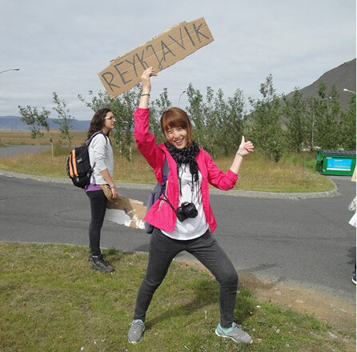
-
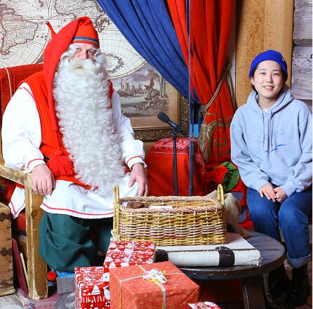
-
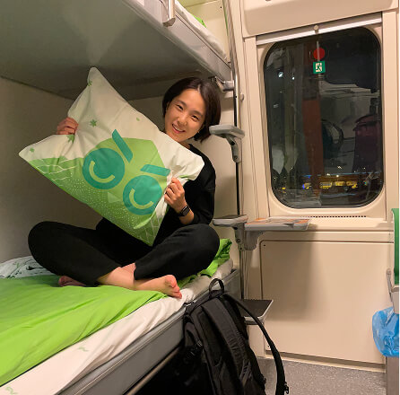
-
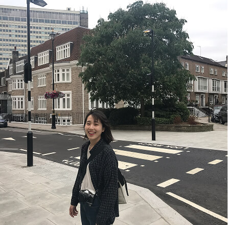
-
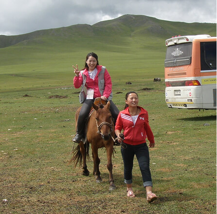
-
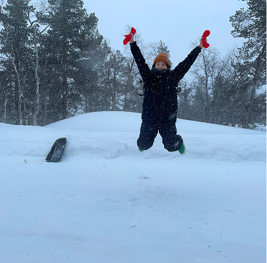
Travel
Experiencing new cultures, meeting people, and stepping into unfamiliar places gives me the energy and refresh I need to stay focused on design. From volunteering at an Icelandic work camp and in Mongolia to taking overnight trains through Finland, each adventure has become a foundation for my next challenge. Here are the places I've explored: 🇲🇳🇨🇳🇹🇼🇵🇭🇮🇸🇨🇭🇬🇧🏴🇳🇱🇫🇷🇫🇮🇬🇺🇯🇵🇺🇸 and 🇨🇦
Editing videos after each trip has become another joy of mine! Check out my travel vlogs!
Youtube새로운 문화를 경험하고 사람들을 만나고 낯선 곳에 발을 들이는 것은 디자인에 다시 집중할 수 있는 에너지를 줍니다. 아이슬란드 워크캠프와 몽골 봉사 활동, 핀란드를 가로지르는 야간 기차까지 각각의 경험이 다음 도전의 발판이 되었습니다. 제가 다녀온 곳들이에요: 🇲🇳🇨🇳🇹🇼🇵🇭🇮🇸🇨🇭🇬🇧🏴🇳🇱🇫🇷🇫🇮🇬🇺🇯🇵🇺🇸🇨🇦
여행 후 영상을 편집하는 것도 빠질 수 없는 즐거움이에요! 여행 브이로그도 확인해보세요!
Youtube-
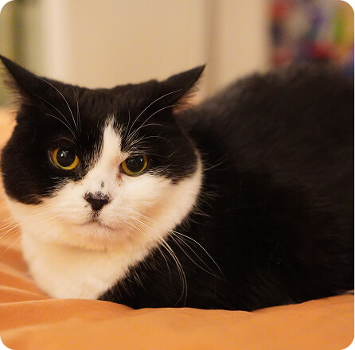
-
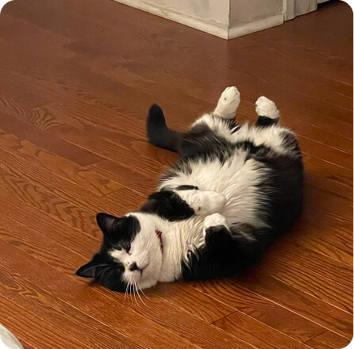
-
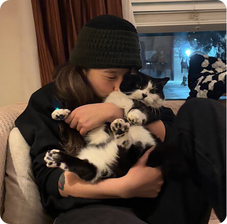
Cat Companion
About a year ago, I met my new family member—Cookie, an 11-year-old cat who came into my life like fate. I'm still learning how to live together, and every day is a new lesson in companionship.
캐나다에서 새 가족을 만났어요. 11살 고양이 쿠키입니다. 아직 함께 사는 법을 배우는 중이고, 덕분에 매일이 새로운 발견의 연속이에요.